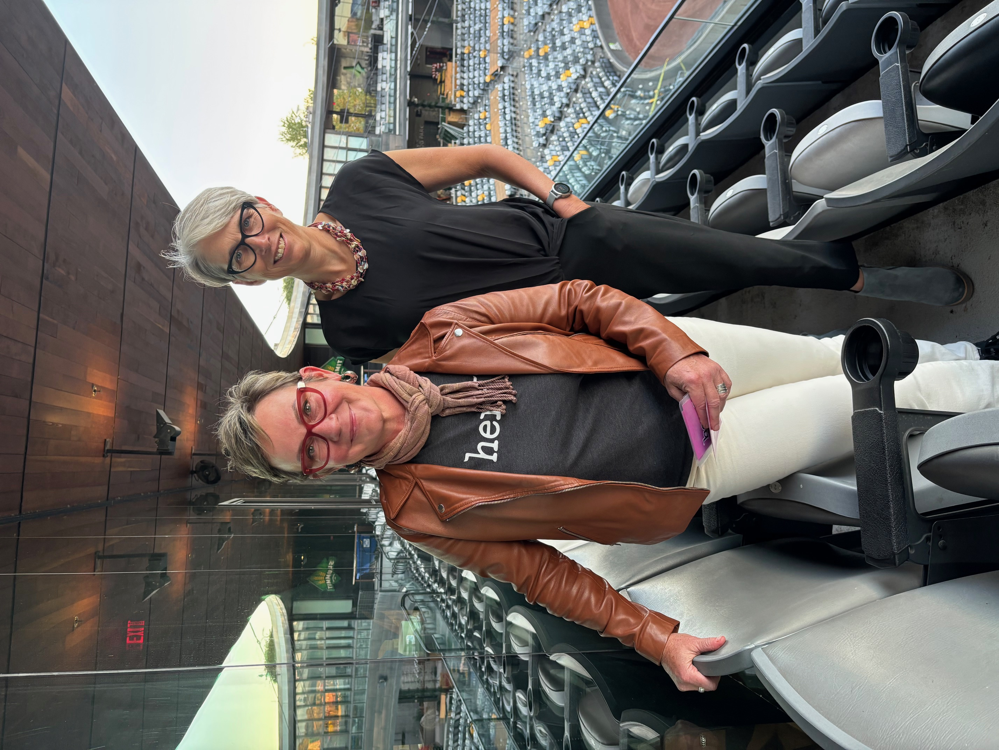
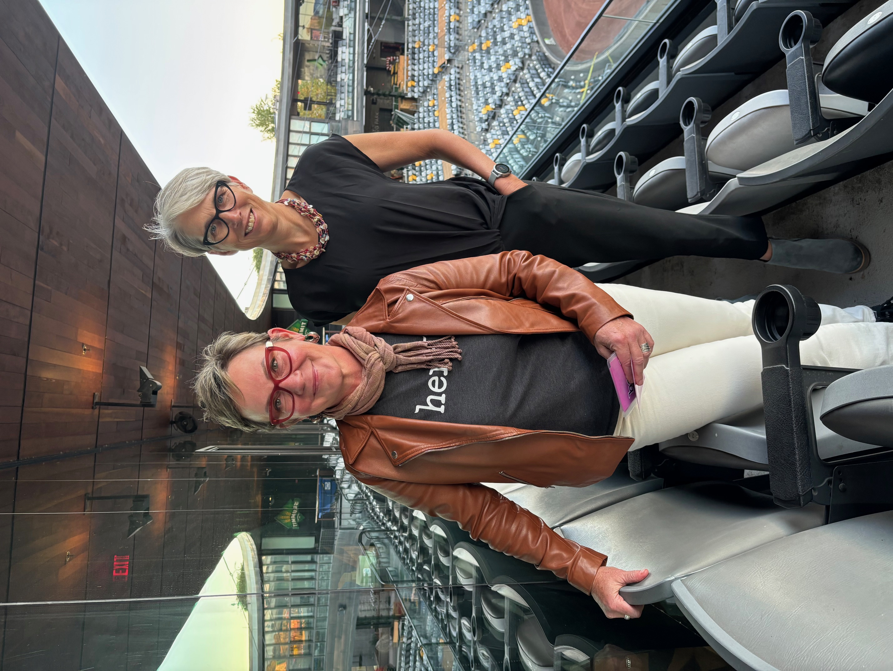

We chose HERD because it encompasses HER— we want to be a space for anyone who has walked through this male-dominated/focused world and not felt entirely welcomed, who has found themselves 'outside' the norm, who has looked for a 'room of their own.' HERD also reminds us that what happens to one of us impacts all of us.
We chose the word HERD because it's a homophone of HEARD. And that's our number one objective— to help you be heard. Your stories matter. They will change the world.
We chose the word HERD because it embodies the collective identity- the belonging to a group, the feeling of a sisterhood that is expansive and limitless, but also right here, in the room.
We know there are negative connotations to herds. Herd mentality isn't always a good thing. And being called a sheep- that most common of herd animals, can be synonymous for following blindly. And then there's cows. You old cow. But we aim to turn that all on its head. There is power in a herd. And in the animal kingdom- herds are primarily female.
Did you know that a herd of musk ox, when feeling threatened, rush together to form a protective circle, facing outward, forming a phalanx of heads and horns? It kind of feels like that is what might be needed right now. A phalanx of heads and horns.
So let's build our herd! We believe that by sharing your story with other women, by being vulnerable and sharing your mistakes as well as your triumphs, you will inspire others to get out there and give it a go. You will make this world stronger, and safer, and frankly more delightful. Get ready to join the herd. Be HERD. You Are Herd.

 
